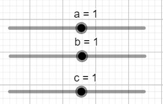
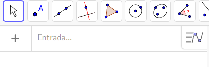

O geogebra é um site em que você pode contruir gráficos apartir de funções, calculos, raízes e muito mais ele é uma ótima ferramenta de construção de gráficos
Nas explicações anteriores eu utilizei-o para fazer os gráficos das funções
Oque eu irei mostrar dentro do app:
Controles deslizantes
onde escreve as funções
e um gráfico
Os controles deslizantes são retas que o usuário pode interagir e modifica diretamente a forma dos gráfico
No canto superior esquerdo tem um espaço para escrever e também tem um "+" que tem algumas opções como texto e expressão
é ali onde você escreve a sua função
